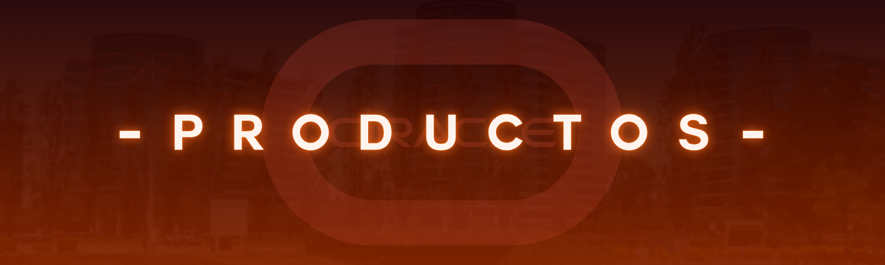
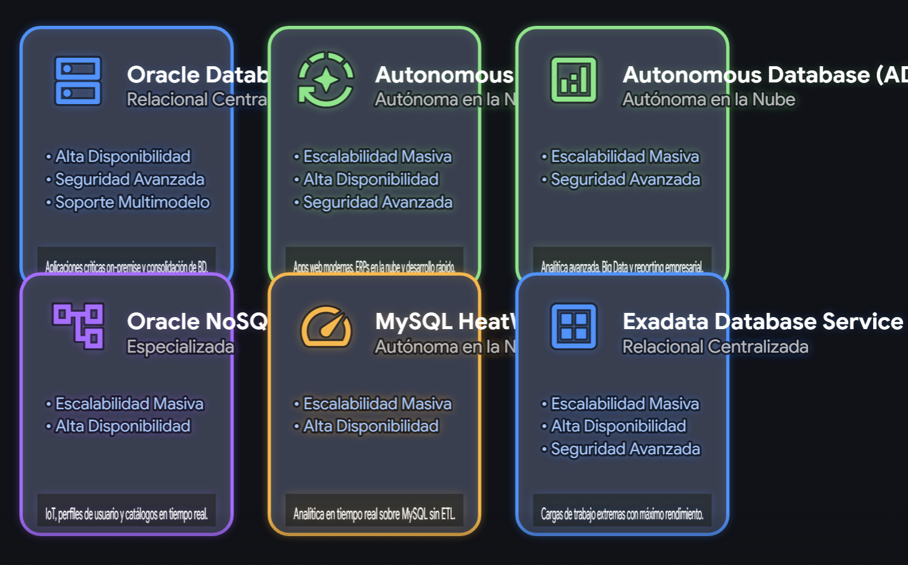
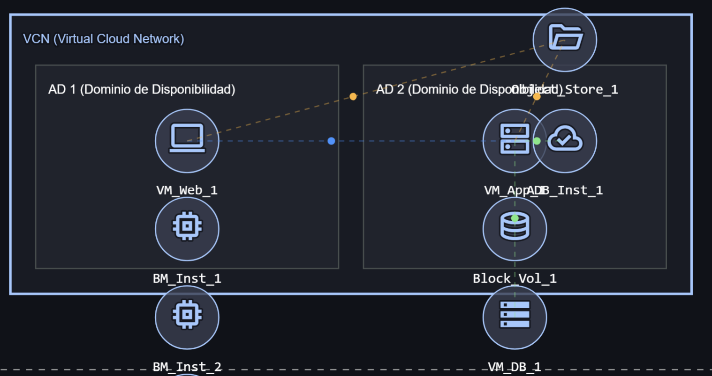
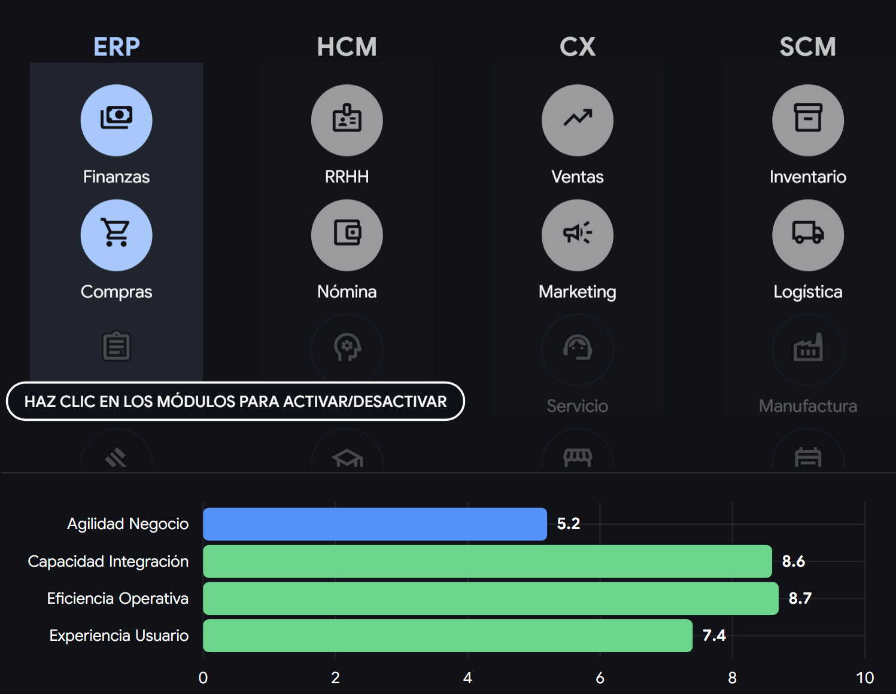
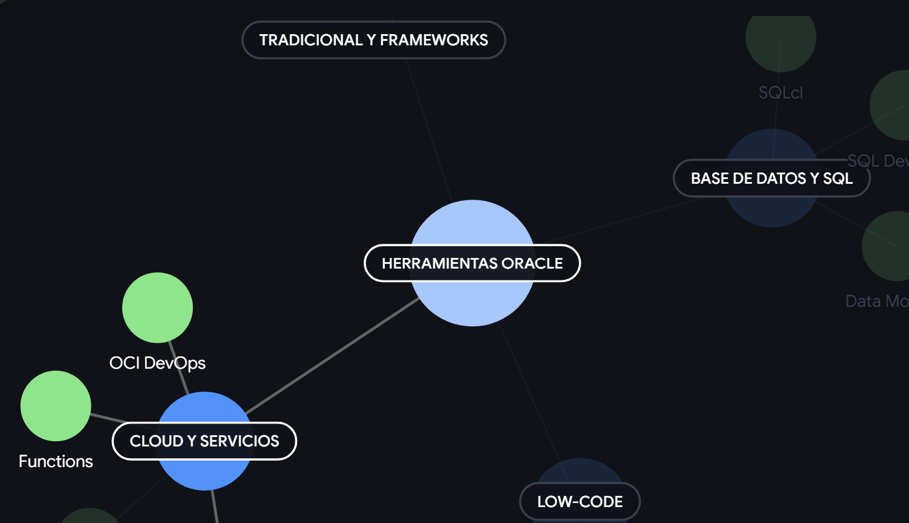

La famosa Oracle Database (versiones 19c y 23c con IA integrada), MySQL (la DB open-source más popular del mundo), y bases de datos autónomas que se autogestionan, auto-parchean y auto-reparan, reduciendo dramáticamente el error humano.

Servidores "bare-metal" sin hipervisor, almacenamiento en bloque y de objetos hiper-escalable, redes virtuales aisladas y servicios de computación de alto rendimiento, diseñados para migrar sistemas empresariales pesados a la nube fácilmente.

Soluciones completas en la nube como Oracle Fusion Cloud ERP (finanzas), HCM (Recursos Humanos), CX (Ventas y Marketing) y SCM (Cadena de Suministro), todas equipadas con módulos de analítica predictiva.

Plataformas vitales como Java (lenguaje que corre en miles de millones de dispositivos globalmente), Oracle APEX (plataforma de desarrollo rápido low-code) y herramientas de integración tipo middleware como Oracle WebLogic.